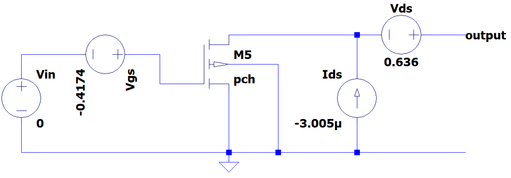
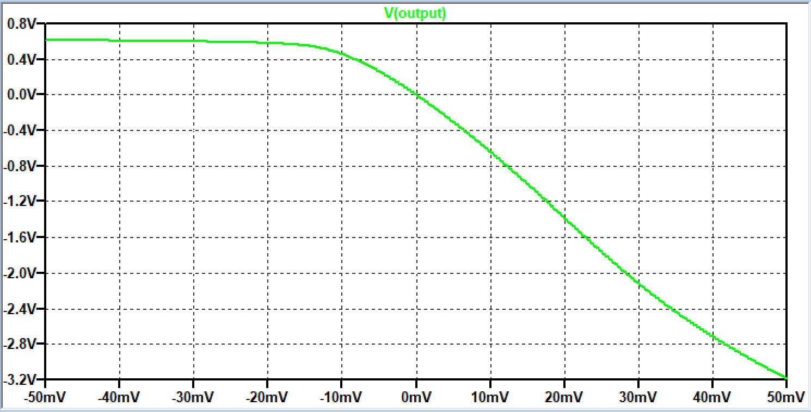
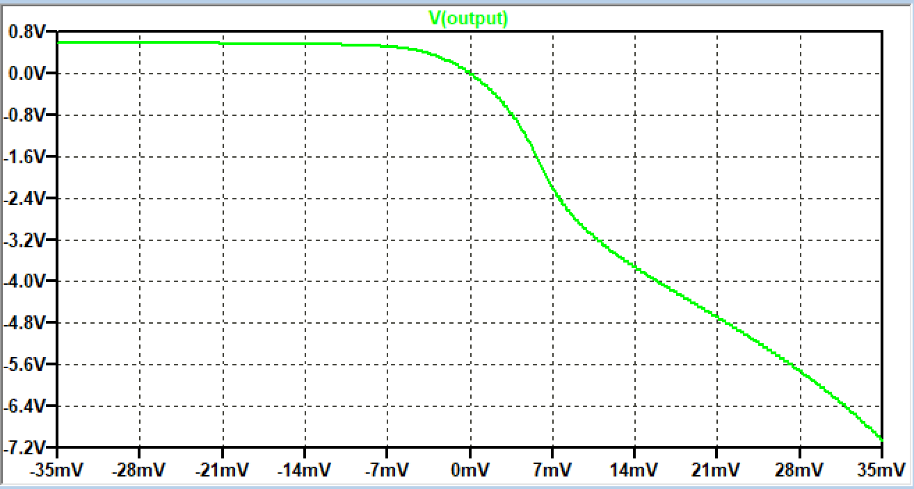
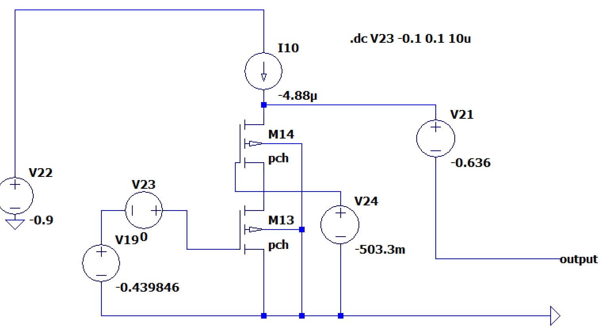

After finding the values for W, L and ID we can start to think about the biasing. The following values were found:
W = 18.45u
L = 0.18u
ID = 3.005uA
VDS = 636mV
From these values, $V_{GS}$ can be determined leading to the following circuit:

With a DC sweep on Vin, the linearity of the transistor can be checked. The output voltage is shown below when the input voltage is swept from -50mV to 50mV.

As can be seen in the plot, the curve goes through the origin. However, it is not linear across the input voltage range.


Go to A1_controller_single_pmos_optimization_index
SLiCAP: Symbolic Linear Circuit Analysis Program, Version 4.0.10 © 2009-2025 SLiCAP development team
For documentation, examples, support, updates and courses please visit: analog-electronics.tudelft.nl
Last project update: 2026-02-23 08:11:02